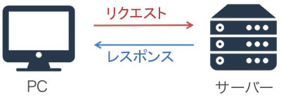
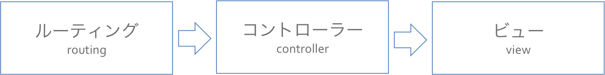
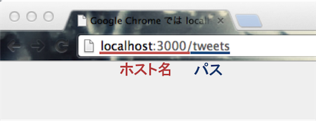
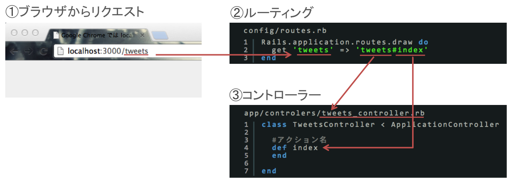
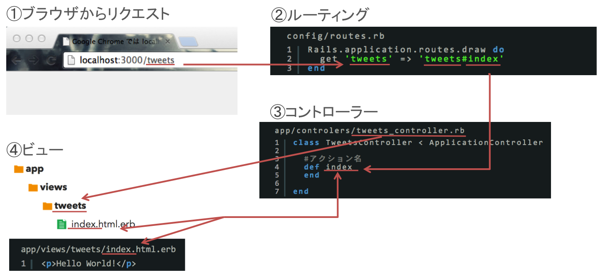
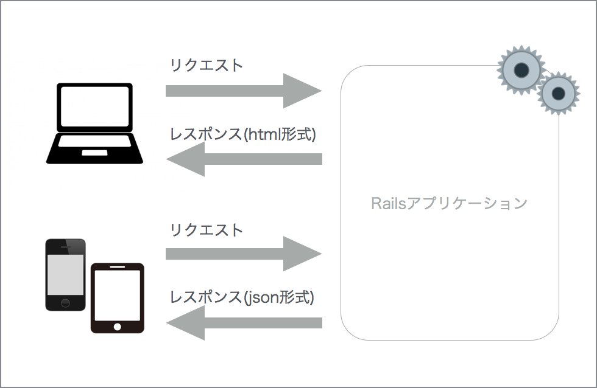
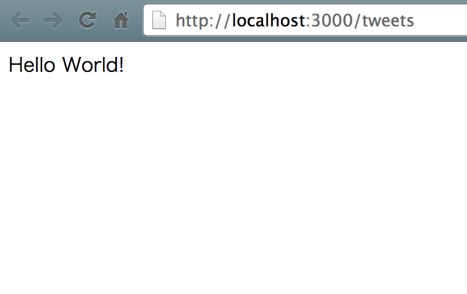
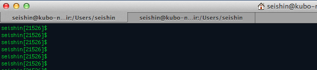

ルーティング、コントローラー、ビューについて理解し、指定したウェブページを表示出来るようにしましょう
・ルーティング
・コントローラー
・ビュー
このセクションでは、指定したURLのウェブページを表示できるようにします。そのために、まずはwebサービスの基本的な仕組みから学習をしていきます。
ユーザーがPCやスマートフォンを使ってウェブサイトにアクセスした時、PCからはリクエストというものが送信されます。それに対して、リクエストを受け取ったサーバーはリクエストに対して適切なレスポンスを返します。これが基本的なウェブサイトの仕組みになっています。

Railsはサーバーの中で、送られてきたリクエストに対して適切なレスポンスを返す処理を行なっています。※厳密には違いますが、あえて簡略化して説明しています。

Railsは行う処理の違いによっていくつかのパートが存在しています。リクエストに対してレスポンスを返す際には、ルーティング、コントローラー、ビューという3つのパートがそれぞれ異なる役割を持って処理を行います。
また、その処理はルーティング→コントローラー→ビューという順番で行われます。個々の役割はのちほど解説しますので、ここでは処理の順番だけを理解しましょう。
ルーティングには、送られてきたリクエストに対してどのコントローラーのアクションを動かすのかを設定しておきます。コントローラーとアクションについては後で解説していきますので、今はそういうものがあると理解しておけば大丈夫です。
リクエストA → コントローラーXのアクションα
リクエストB → コントローラーYのアクションβ
Railsではルーティングをconfig/routes.rbに記述します。このファイルを編集していくことで、新しいルーティングを設定したり、ルーティングを削除したりすることが出来ます。
1 2 3 |
Rails.application.routes.draw do
get 'tweets' => 'tweets#index'
end
|
ルーティングはRails.application.routes.draw doとendで挟まれた中の部分が重要な意味を持ちます。
今新たに記述したget 'tweets' => 'tweets#index'を見てください。
まずは、get 'tweets'の部分ですが、これはパソコンから次のようなURLでサイトにアクセスしたときのイメージしてください。

localhost:3000の部分はホスト名と呼ばれる部分で環境によって変わるので今は気にしなくて大丈夫です。ここで重要なのはパスと呼ばれる/tweetsの部分です。ルーティングはパスに対応してどのコントローラーのアクションを動かすかを設定します。
次に'tweets#index'の部分です。
tweetsの部分はコントローラー名、#の後のindexの部分はアクションを指します。
コントローラーとアクションについては今後学んでいくので、今はルーティングについてのみ理解できれば大丈夫です。
Railsでの処理はルーティング→コントローラー→ビューの流れで行われていることを学習しました。ルーティングの設定が終わったので、次はコントローラーの作成を行ないたいと思います。
コントローラーはルーティングとビューをつなぐ役割を持っています。リクエストが送られてきた際にルーティングが読まれると、それに対応するコントローラーが動きます。コントローラーでの処理が終わると、そのコントローラーから指定したビューが読みこまれます。このようにコントローラーはルーティングからビューへと処理を受け渡す役割を持っています。
コントローラーを作成するためにはrails g controllerコマンドというものを使用します。このコマンドを使用することによってコントローラーに関するファイルを自動で作成してくれます。実際に使用する際には「rails g controller コントローラー名」というように作成したいコントローラーの名前を後ろに付けて実行します。
1 2 |
$ rails g controller コントローラー名
# コントローラーを作成
|
※ ちなみに、rails g controllerのgとは「generate」を省略したものです。
1 2 3 4 5 6 7 |
# pictweetディレクトリに移動
$ cd ~/projects/pictweet
# pictweetディレクトリにいることを確認
$ pwd
=> /Users/ユーザー名/projects/pictweet
# コントローラーを作成
$ rails g controller tweets
|
正しく作成できれば以下の様な出力結果が表示されます。
1 2 3 4 5 6 7 8 9 10 11 12 13 14 |
create app/controllers/tweets_controller.rb
invoke erb
create app/views/tweets
invoke test_unit
create test/controllers/tweets_controller_test.rb
invoke helper
create app/helpers/tweets_helper.rb
invoke test_unit
create test/helpers/tweets_helper_test.rb
invoke assets
invoke coffee
create app/assets/javascripts/tweets.js.coffee
invoke scss
create app/assets/stylesheets/tweets.css.scss
|
コマンドを正しく実行出来ると、出力結果が表示されます。この出力結果の一番最初の行に注目してください。
1 |
create app/controllers/tweets_controller.rb
|
と書いてあります。これはcreate以下のファイルを新しく作成したことを意味しています。作成されたファイルはapp/controllers/tweets_controller.rbとなっているので、app/controllersというディレクトリにtweets_controller.rbというコントローラーファイルが作成されたことを意味しています。
さきほどコマンドを実行する際に、rails g controllerのあとにtweetsと付けて実行したことを思い出してください。このtweetsはコントローラー名を表しているので、その結果tweets_controller.rbというコントローラーファイルが作成されました。
先ほど、コントローラーを作成する際に「rails g controller」コマンドを使用して作成を行ないました。この時にコントローラー名を間違えて作成してしまった場合、「rails d controller」コマンドを使用してコントローラーファイルを削除することが出来ます。
1 2 |
$ rails d controller コントローラー名
# 作成したコントローラーを削除
|
※ ちなみに、rails d controllerのdとは「destroy」を省略したものです。
このコマンドを使用する際には間違えて作成したコントローラー名を後ろにつけて実行します。このコマンドで削除を実行すると、コントローラーを作成した際に自動的に作られた関連ファイルも同時に削除されるので非常に便利です。
さきほどの作業によってコントローラーファイルが作成されました。しかし、作成されたのはコントローラーのひな形のみで、ページを表示させるのに必要なアクションは書かれていません。そこで、コントローラーファイルを編集してアクションを追加していきます。
1 2 3 4 5 6 |
class TweetsController < ApplicationController
def index
end
end
|
tweets_controller.rbの一番最初の行にTweetsControllerと記述してあるのに注目してください。これはコントローラーにおけるクラスを示しています。コントローラークラスはコントローラーのファイル名(tweets_controller.rb)から、単語の先頭を大文字にしてアンダーバーを取った名前(TweetsController)になります。Railsにおいて名前は重要な意味を持っているので、クラス名が違ったりすると正常に動かなくなります。
アクションとはコントローラーに存在するインスタンスメソッドのことを指します。
さきほどの編集でTweetsControllerクラスにindexというインスタンスメソッドを作成しました。つまりこれはindexというアクションを作成したことを意味します。コントローラーは複数のアクションを持つことが可能なので、index以外のアクションを追加することが可能です。
ここまでで、ルーティングからコントローラーまでの流れを説明しました。下の図でリクエスト→ルーティング→コントローラーの流れを今一度、整理してみましょう。

ルーティングの設定、コントローラーの作成が終わったので、続いてはビューの作成を行ないます。ビューはウェブページにおいて見た目を担当する部分です。
Sublime Textの場合「tweets」を右クリックして「New File」を押すことで新規ファイルを作成することができます。
以前にルーティング→コントローラー→アクション→ビューの順番に処理が進むことを説明しました。ビューファイルはウェブサイトにおける見た目の部分を担当していて、レスポンスとして返されるのがビューファイルのデータというわけです。ビューファイルの拡張子はhtml.erbですが、これはrubyのコードを書くことが出来るHTMLファイルだと理解しておきましょう。
ビューファイルはコントローラーのメソッドひとつにつき、ひとつ存在しています。今回作成したビューファイルは「tweets」ディレクトリの中に「index.html.erb」という名前で作成しました。つまりこれは「tweets」コントローラーの「index」アクションのビューファイルであることを示しています。このようにビューファイルはコントローラーと同じ名前のフォルダ内にあるアクション名と同じファイル名のものが適用されるというrailsの決まりがあります。

Railsから生成できるビューの情報は、htmlの他にjsonという形式などがあります。
今回のようにwebブラウザにて表示するビューファイルを生成する場合は◯◯.html.erbというビューファイルを用意します。
iOSアプリケーションやAndroidアプリケーションなどに情報を渡したい場合はjsonという形式で情報を渡すように設計します。

ただし、iOSアプリケーションやAndroidアプリケーションなどを作る場合は、html/cssの代わりにSwiftやJavaといった言語を利用してビューを作る必要があります。
ビューファイルを作成したので、ウェブページを表示するために必要なものは完成しました。ただ、現在の状態だとビューファイルの中身が白紙なので、真っ白のページしか表示されません。そのため、今からビューファイルを編集していきます。
1 |
<p>Hello World!</p>
|
app/views/layouts以下にあるファイルはレイアウトファイルと呼ばれるビューファイルです。レイアウトファイルは、それぞれのビューファイルが読み込まれる前に読み込まれます。つまり、このファイルにそれぞれのビューの共通部分(ヘッダーやフッターなど)を定義しておくことで、同じコードを省略することができます。
1 2 3 4 5 6 7 8 9 10 11 12 13 14 |
<!DOCTYPE html>
<html>
<head>
<title>PicTweet</title>
<%= stylesheet_link_tag 'application', media: 'all', 'data-turbolinks-track' => true %>
<%= javascript_include_tag 'application', 'data-turbolinks-track' => true %>
<%= csrf_meta_tags %>
</head>
<body>
<%= yield %>
</body>
</html>
|
application.html.erbの11行目の<%= yield %>という部分に注目してください。これはこの部分をそれぞれのビューファイルに置き換えるということを示しています。つまり、今回の場合、index.html.erbに<p>Hello World!</p>と記述しただけで、index.html.erbは以下のように編集するのと同じことになります。
1 2 3 4 5 6 7 8 9 10 11 12 13 14 |
<!DOCTYPE html>
<html>
<head>
<title>PicTweet</title>
<%= stylesheet_link_tag 'application', media: 'all', 'data-turbolinks-track' => true %>
<%= javascript_include_tag 'application', 'data-turbolinks-track' => true %>
<%= csrf_meta_tags %>
</head>
<body>
<p>Hello World!</p>
</body>
</html>
|
この編集によってindex.html.erbが使用された際に、「Hello World!」と表示されるようになりました。今から実際にウェブページが表示されるのかを確認していきます。
1 2 3 4 5 |
$ cd ~/projects/pictweet
# アプリケーションのあるディレクトリに移動
$ rails s
# テストサーバーを起動
|
テストサーバーが正しく起動できていれば、以下の様な出力結果が表示されます。
1 2 3 4 5 6 7 8 |
=> Booting WEBrick
=> Rails 4.1.6 application starting in development on http://0.0.0.0:3000
=> Run `rails server -h` for more startup options
=> Notice: server is listening on all interfaces (0.0.0.0). Consider using 127.0.0.1 (--binding option)
=> Ctrl-C to shutdown server
[2014-10-10 21:20:15] INFO WEBrick 1.3.1
[2014-10-10 21:20:15] INFO ruby 2.1.2 (2014-05-08) [x86_64-darwin13.0]
[2014-10-10 21:20:15] INFO WEBrick::HTTPServer#start: pid=8328 port=3000
|
アプリケーションを動かすためにはサーバーを立ち上げる必要があります。「rails s」コマンドはアプリケーションを動かすためのテストサーバーを起動するためのコマンドです。rails sのsとはserverを省略したものです。
テストサーバーが起動したので、アプリケーションが正しく動いているかを確認しましょう。テストサーバーでアプリケーションを立ち上げる場合のURLはパスの前にhttp://localhost:3000がついたものになります。

rails sコマンドで立ち上げたサーバーは「control + c」(controlボタンとcを同時押ししてください)
でシャットダウンできます。サーバーを立ち上げたままだとコマンド入力などはできないので、テストサーバーでの確認作業が終わったらシャットダウンしましょう。
1 2 3 |
^C[2014-10-30 10:00:16] INFO going to shutdown ...
[2014-10-30 10:00:16] INFO WEBrick::HTTPServer#start done.
Exiting
|
「control + c」を打って「rails s」で立ち上げたサーバーをシャットダウンした場合、再度「rails s」を実行しなければブラウザ上で表示を確認することが出来ません。
そこで、ブラウザで複数のタブを使用するようにターミナルでも「タブ」を活用してみましょう。
「command + t」を押してみて下さい。下記のようにターミナルの上部にタブが表示されます。
タブをクリックすることでタブを切り替えることが出来ます。

今後、片方のタブで「rails s」を行い、もう片方のタブで作業すると、確認の度に「rails s」を打たなくても作業が進められます。
ここまで学習した知識を利用し、問題形式でアプリケーションを作成していきましょう。問題を解き、解説動画を確認しましょう。
得た知識は、実際に活用しないと身につきません。そこで、Pictweetの開発と平行して「Nekotter」という別のアプリケーションも作成していただきます。
下記のリンク先にある「Nekotter作成問題」に挑戦しましょう。
問題を解き終えたら、実際にNekotterを開発しつつRailsのポイントに関して解説している動画を見て、理解を深めましょう。
お疲れ様でした！このカリキュラムの終わりに確認問題を解きましょう。
 大宅 誠人
大宅 誠人